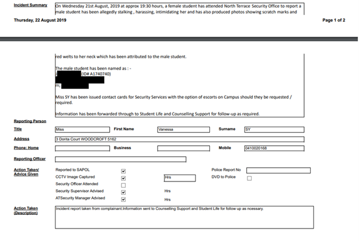
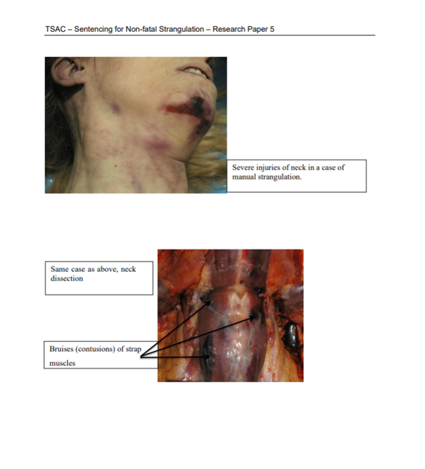
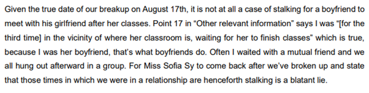

Vanessa Sy is an abusive sociopath living in Adelaide, South Australia. On 21/08/2019 Vanessa Sy instigated false assault claims to both South Australia Police and The University of Adelaide alongside her friends. These fabricated claims of assault were directed at her ex-boyfriend after a slew of abusive behaviour throughout their relationship reported by the defendant.
On 05/05/2019 Vanessa Sy denied her boyfriend access to drinking water at a local Japanese festival where Vanessa Sy was volunteering. The victim repeatedly pleaded with Vanessa Sy to provide him with water. Vanessa Sy had free access to water bottles in the staff area. Peter Stone, a friend of Vanessa Sy, stated that he didn't know why she didn't want to give out any water, but that, "It was weird." Other volunteers reportedly jumped in to provide her boyfriend with water, saving him from the effects of dehydration.
A second event detailed a sexual assault made by Vanessa Sy. The victim was heading towards a university VR class when he ran into Vanessa Sy who promptly stopped him, approached, and kissed him on the lips without consent. He reported feeling disgusted that she thought she could freely violate him. He stated the pair were not even remotely close at the time and the kiss was unwarranted. When the victim told her that he felt that she had just sexually assaulted him, she only responded with, "Really?" Before walking off and never acknowledging the event again, nor apologising to the victim.
Vanessa Sy frequently posts to her tumblr page many pro-misandry (source1, source2*) and pro-communist (source*) sentiments.
*Vanessa Sy has since deleted her reblog of sources marked with '*'.
When reaching out to Vanessa Sy for comment on why she lied to the police and university security she stated, “I don’t care enough to tell you.” With that in mind, we present the following information for your review, starting with the intervention order she placed against the defendant:

Vanessa Sy is caught lying about her and the defendant’s birth year. She told the police that they were both born in 1990, when in fact both Vanessa Sy and the defendant were born in 1999.

Unbeknownst to Vanessa Sy, the location she had chosen to stage her assault claims had CCTV cameras. See: “CCTV Image Captured” field. We know that Vanessa Sy was unaware of the CCTV when she made her report because when asked about the CCTV footage she mistakingly claimed, "There was no CCTV footage."
Detailed above is the university confirming the existance of CCTV and inviting the defendant to view it for his defence. He had this to say:
He added that he believed Vanessa was assaulting him in an attempt to provoke him into fighting back so that she could corroborate claims that he had assaulted her. At one point he detailed that Vanessa Sy nearly succeeded in pushing him down a flight of stairs. Vanessa Sy lied about the existence of CCTV because she knew it would make her look bad if people knew it existed.
Pictured are the wounds that Vanessa Sy claims were inflicted by the defendant. According to her, these are the result of a vicious murder attempt through strangulation. However, not only do no medical records of these wounds exist, but Vanessa Sy refused to sign her witness statement when asked by police. Had she of signed it she would have been held legally accountable to her claims and could have been arrested for creating false police reports. In short, she knew what she was doing, and there was clear malicious intent behind her actions.
In Australia, “strangulation” is its own charge, separate from standard assault charges. Unlike aggrevated assault, strangulation does not offer bail. Importantly, strangulation is only valid when occuring within a domestic relationship. Vanessa Sy lied to the police about their ages so the claim that they were in a domestic relationship would become more believable, all in an attempt to have the defendant incorrectly charged with a crime he was fundamentally ineligible for. Strangulation charges have since been reformed in an attempt to prevent false charges like Vanessa Sy’s, after it was found that just 1.9% of charges resulted in conviction (source).
After the extent of Vanessa Sy's lies were uncovered by police, all charges were dropped. Attached is a collection of examples from real victims of strangulation, taken directly from the “Sentencing For Non-Fatal Strangulation – Research Paper 5” published in May of 2021 by the Sentencing Advisory Council.

Not only are the pictured wounds not even remotely similar to the wounds Vanessa Sy displayed, one must also wonder how Vanessa Sy was comfortable comparing herself to such victims at all. Doing so only takes power away from those who need it.
Upon her claims to the police being dropped, Vanessa Sy sent an incident escalation email to the university. Since Vanessa Sy's claims of strangulation had already been dismissed by police, she opted to reduce her claims to stalking and harassment, hoping a less severe claim might receive less thorough investigation. She did so on advice of her mother, who worked at the university in an office opposite to the security office. Note that the attached document was prepared by Sofia Sy, Vanessa Sy's sister, who had recently graduated with a law degree from the same university. Sofia Sy was the one who groomed Vanessa Sy on exactly what to say to police to cause the defendant to be incorrectly charged with strangulation. It comes as no surprise that to this day she is not practicing law (source).
Above she is seen employing a tactic known as "Two Truths and a Lie" in attempt to make her falsehoods more believable. While the first two points are believed to be true, the third point is a lie. The relationship between Vanessa Sy and the defendant did not end on the 14th of August, rather, it ended on the 17th of August. The reason Vanessa Sy lied about the date of their breakup was so she could misuse instances in which the pair met up on mutual terms while they were still together as examples of her being stalked. To understand further let’s look at the document that the defendant submitted to the university in response to these incident reports.

As mentioned in the above statements, Vanessa Sy had expressed feelings for a man called Joseph Pritchard throughout the time that the defendant was dating her. The reason for their breakup was the result of coercion from her friend, Samantha Pineda, who upon learning this sought to foster a relationship between Vanessa Sy and Joseph Pritchard. Insecurity and jealousy drove Samantha Pineda to hate the defendant, whom she had never formally interacted with. We know this because Samantha Pineda was quoted saying things about how she, "Didn't like [the defendant] because he meant that she gets to spend less time with Vanessa Sy." This quote was supplied by Peter Stone, who obtained it from an inebriated Samantha Pineda. Peter Stone also told the defendant that, "I don't know why, but she was super pissed with you." The defendant added that he had seen messages between Samantha Pineda and Vanessa Sy in which Samantha Pineda was encouraging Vanessa Sy to message Joseph Pritchard while they were still together. When the defendant confronted Samantha Pineda about what she had been saying, she told the defendant to, "Stay out of my life." Her outburst was the result of her textbook narcissism and manipulative nature (source). Samantha Pineda had a vested interest in sabotaging Vanessa Sy's relationship to regain control over her.
This is reinforced by the fact that Joseph Pritchard was instructed by both Vanessa Sy and Samantha Pineda to submit similar false reports to South Australia Police and The University of Adelaide against the same defendant in the hopes that it would have the effect of a "double whammy". Joseph Pritchard degraded himself and his ethics when he went along with their scheme under the assumption that he would receive sexual favours from Vanessa Sy in return. You can read more about his crimes at this website. Vanessa Sy, Joseph Pritchard, and Samantha Pineda had previously posted to social media various photographs depicting the three of them together just days after the submission of these reports. However, all such photos have since been removed.
When we asked Vanessa Sy to comment on the reason for her breakup, she stated that she broke up with the defendant because, “He tried to kill me.” However, the date Vanessa Sy provided for the alleged assault was August 20th and in her own report Vanessa Sy claims the breakup occured on August 14th. The date of the breakup preceeds when she alleges the assault occured so it's impossible for that to be the reason. Not only is this proof from her own mouth that Vanessa Sy lied about the allegations, it's obvious why someone trying to hide an affair would. Vanessa Sy deflects blame and fails to own up to her actions regarding the reason for their breakup, blaming it on a fictitious assault, so that she can absolve herself of any guilt and shut down further questioning from her peers.
This is the complete report that Sofia Sy provided for the first of two incidents detailed in this document. Following is the defendant's response to the university.
Vanessa Sy was baiting the defendant into meeting up with her so that she could spin a story of stalking post-breakup. By making it out like they broke up on the 14th they were able to corroborate a more severe story against the defendant by labelling subsequent organised and mutually agreed upon meetups as unsolicited stalking. Vanessa Sy was attempting to cover up her affair, scared of whatever social repercussions might have entailed from her family and friends if they found out.
Vanessa Sy tacks on a lie about the theft of a pair of glasses to her report. This was not in the original incident report, nor was it reported to the police. This is because it is completely fabricated. Vanessa Sy has been seen wearing the same glasses on numerous occasions by friends and family after this event (source).
Note the language used, "[Vanessa Sy] told me that she also told [the defendant] multiple times to give her her glasses back and he did not." The defendant stated the following regarding this, "I didn't steal anything. Her sister told me in text messages that it was my responsiblity to ensure she was not late for her curfew. I met up with Vanessa that night because she told me she wanted to talk about her decision. When I got there, she had changed her mind. I asked her if she'd like me to leave, but to my surprise she begged me to stay. I asked her multiple times throughout my stay if she'd like me to leave and every time she returned the same, 'No.' When it got close to the time that I knew she had to meet with her mother, I began to pack up her belongings for her to ensure she wouldn't miss her curfew, as instructed by her sister Sofia Sy. By the time we departed from each other on North Terrace she had already received those belongings back, less than 10 minutes later." These details are purposefully omitted from Sofia Sy's report so that she could tack on as many offences as she could come up with, throwing everything she had at the wall in hopes that something would stick.
Sofia Sy also remits information about why the defendant, “Entered [Vanessa Sy's] class.” She contradicts herself by stating the defendant, “Would not let [Vanessa Sy] go despite being repeatedly asked to.” This is despite previously mentioning that Vanessa Sy, “Wished to stay in the computer lab longer because she had work to finish.” Did she want to leave, or not? Sofia Sy also misrepresented whether Vanessa Sy was late in meeting her mother due to the defendant, or due to her own negligence. If Sofia Sy claims that Vanessa Sy was late because the defendant was holding her up, yet that the defendant was the one who initiated them leaving by packing up her belongings, the implication is that Vanessa Sy would have arrived at the rendezvous with her mother late regardless of whether or not the defendant intervened. Sofia Sy is attempting to pin a fault made by Vanessa Sy onto the defendant to embellish their story.
Later in Sofia Sy's report she claims to have been, “Made aware that V told a female friend that J was choking her.” The phrasing makes it clear that Sofia Sy initially learned of these false allegations from a third party, not from Vanessa Sy directly. This "female friend" is the previously mentioned Samantha Pineda. If you recall, she pressured Vanessa Sy into breaking up with the defendant so that she could begin dating Joseph Pritchard, and likely saw an opportunity to inflict further damage to the defendant by getting Sofia Sy involved with her plan of creating false police reports. It's clear these false reports were the result of an orchestrated warfront from all three individuals: Vanessa Sy, Sofia Sy, and Samantha Pineda.
Sofia Sy's true nature is easily observed from the following direct messages between the defendant and Sofia Sy, which also provide greater insight into her family dynamics.

These messages confirm the defendant's reason for packing up Vanessa Sy's belongings that night as we can identify that he was instructed by Sofia Sy to "Send her home even when she doesn't want to yet." From the dates listed in the chat history, Vanessa and Sofia Sy had been planning this event as early as two weeks in advance. They also make it clear that the entire family had it out for the defendant, as Sofia Sy boldly stated to him that "If the family don't support you... It's really going to be difficult... My mom's got half the mind to make her leave you." The defendant adds:
One can deduce from Vanessa Sy's tumblr page that she spends most of her free time watching anime, having posted some form of anime related image or gif every day for half a decade. As a result of her isolation, she expresses feeling like a neglected loner (source1, source2, source3). It's likely that this was the first time she'd been in the limelight where everything was finally about her. Off the high from the attention, she's doubled down on her accusations and continued to revel from the sympathy she receives.
It’s undeniable that two independent bodies: SAPOL and the UoA, with access to the full length of these documents, and access to the raw CCTV footage as captured, after observing Vanessa Sy’s mannerisms and wounds in person, and whom have viewed these types of cases hundreds of times in the past, have deemed the defendant innocent. Note that two out of the three members of the student tribunal at the University of Adelaide were women, as was the police officer in charge of the case at SAPOL. The writing on the wall is clear. Vanessa Sy is a disgrace to society and a disgusting human being. She lacks accountability for her actions and does not respect the meaning of her words nor the weight of her actions.
Be very cautious when dealing with Vanessa Mae Lee Sy and her family. The best advice is to stay far away. There are many other incidents involving their family that have not received as much attention as this.